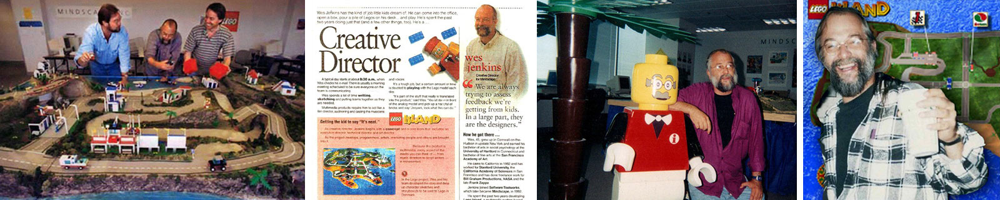

An Interview with Wes Jenkins the Creative Director of LEGO Island
Ever wondered why you can't go into the cave under the island? Read this exclusive interview with the co-creator of LEGO Island, Wes Jenkins, to learn about the making of the game, the planned ideas that never panned out, the missing spinoffs, and more!
Multiple images of Wes showing his involvement in the making of LEGO Island
First off, I'd like to thank you in advance for answering this Q&A! Can you tell us a little bit about yourself, your history, and how you got into the gaming industry?
I was raised by a pack of balloons in upstate New York and temporarily landed in New Jersey, Connecticut, Venice-CA, San Francisco, Seattle, London-UK and finally in Austin Texas. I began my career as a small child and continued to grow when appropriate.
But seriously, which is very hard for me to do… It's been a very Forest Gump like career… I doodled since my first birthday. I got a B.A. in psychology in Connecticut then hitchhiked to San Francisco for a BFA in art school. I did everything from production artist to Creative Director… cartooning for local papers, being an art director, doing crappy advertising, illustration, design, animation, comedy radio show; anything I could do with art… I fell into a cool opportunity by answering an ad for an artist wanted at Stanford University. I found myself in this consortium where companies gave us these computers to engineers and some artists to figure out what to do with them and how to break them…anyway, I'm getting carried away… what am I writing a novel here? But, I did 'work" before LEGO for
NASA, Zappa, Disney, PBS, ABC, MCA, IBM, California Academy of Sciences, Winterland/Bill Graham Presents…
Wow, those are a lot of big companies! Okay, can you describe the initial steps that lead up to the creation of the LEGO Island game (whose idea it was, and how did the ball get rolling)
Well, I wanted to say it was all my idea and in a way – it kind of was… but not without everybody I worked with (see round 1 stages). Mindscape, like the biz in those days started making divisions like "Kid's products" and "Print products".
The deptartment head researched toy companies and thought the company should pitch LEGO. Again, I just was sort of in the right place at the right time, I guess. I was asked to put together something and I went with Paul – the smart education guy – to the Toy Fair in NYC to see if we could get an appointment. Somehow we did. I think it was Paul's charm and wisdom – not me.
So, what was it like working on LEGO Island?
It was the coolest adventure in my Forest Gump-like career. Ultimately, it was about having fun, seriously. The project was about providing a fun engaging experience for kids to play, to learn and to interact in a LEGO-eye-view world of make believe, so we had to have fun to do that. It was designed as a toy with gaming features, if you wanted a game to play. LEGO is not about telling you what to do – it's about having undirected fun so we went with a more open playing field. The team that we put together was outstanding kids-at-heart professionals.
Scott Anderson was our producer, Dennis Goodrow was our Technical Director, Paul Melmed was our educational expert and Dave Patch was our Art Director. There were some great actors, musicians, artists and animators like Jeff Walkup, Kevin Byall, Jim Pearson, Shawn Wallis and a great team of programmers and more artists, all with a sense of fun.
What were your duties as the creative director?
I played with a great team of like-minded fun people. Oh, I said that already. Specifically, my duties were anything I could do to make it happen with a bunch of great people that soon became my friends. My ultimate duties were to design the concept, do presentations, write the script, write and design the product with a team of a great producer, a great Technological Director, killer artists, actors, musicians, an education expert… and on and on… oh and one meeting after another…
There were meetings and more meetings in California, Connecticut, England, and Denmark. There was auditioning actors/voices, musicians, artists. There was directing audio, animation and art and well… all kinds of stuff really. I want to say everybody did everything, but that's not all that accurate – I hate sounding like an arrogant schmuck: "Oh I did this and I did that"… I'm not really… but, well, you asked and I did do a lot on it.
Pitched the idea to LEGO with our cool educational expert at the Toy fair/NY
Rough Storyboards, rough sketches, presentations (Connecticut first, then England, then Denmark)..to final story boards, sketches…
In house meetings with one of the VPS and a department head guy who were there at the time but soon left- made Powerpoint presentations of the meetings.
Flow charts, concept summaries and meetings with Dept. head and LEGO reps
A cool new producer came in- so we met and tried to figure out if we were on the same page- we were.
Interviewed/ Hired the art director and solicited for team members
Writing the first pass design doc. More meetings with tech head, producer, and art director…then with the team to finalize concept design doc
More meetings with LEGO- feedback/discussions/ (repeat and rinse)
Built a two table sized LEGO Island out of modeling clay, Styrofoam, and, of course, LEGO with my wife…( how much fun is that!)
Focus testing with kids with The educational guy
Demo direction for E3 and presentation of video that was made by our amazing animators
Review and suggest and direct animation and art that had to be real LEGO
Wrote the script- reviewed with producer- enhanced, rewrote and finalized. Met with a few writers to have some sweetening up on dialog. Some worked, some didn’t…rewrite- finalize
Discuss defensively with administration that it’s going well. They were sure it wouldn’t and couldn’t. Producer would get beat up daily.
Some 2d Art for product-like facial expressions
Designed characters, their bios, and personalities were vased on educational influences like a guy named Howard Gardner who has this theory about Multiple Intelligences but I’m babbling now
Co-wrote back story with producer
Selected voice actors
Selected musicians
Co-directed in sound studio
Was a voice over
Wrote with producer- user guide comic book- designed book- directed the art
Finalized all of the above
Meeting, meeting, more meetings…work work and more work
Discussed and contributed to the TV ad agency for commercial
Wrote a Disney radio ad for the product
Comps and direction for the package.
Interviews with press
Finalized product
Did initial concepts for several next product
Get fired the day before product release
Went home and sulked and got pissed
Watched as the product success went beyond the company expectations and receive awards. Heard from kids who really liked it and realized that I can die a happy man.
Got hired by LEGO
Geez – that’s wordy but we mostly had a great deal of fun and some not so much fun with administration…I think that covers most of it but there’s no doubt something that I’m missing
Were you around for any of the voice recording sessions? What about John Morris (from the Toy Story trilogy) who played Pepper… what was he like to work with?
Oh yeah I was around… which was amazingly cool… I auditioned the talent and directed them all in the studio along with my producer, educational guy and sound engineer.
June Foray was one of the voices who was the voice of Rocky from The Rocky and Bullwinkle Show, in addition to a most versatile and well accomplished pro… and David Landers who was Squiggy in Laverne & Shirley (as well as a lot of characters)… and a bunch of really great talent. It was cool. One of the studios was down in Hollywood, and one day I bumped into William Shatner. I said some dumb joke but he smiled a bit…
John Morris was great! Really smart and really nice and fun to work with… the more I think about it – everybody was extremely cool and fun – except for some administration folks that didn't care whether we were selling golf balls or something fun, and possibly kind of educational. At least something encouraging for kids to make up stuff.
LEGO has – or at least used to have – the slogan of “Play to Learn.” I like that.
How much of the character's personalities, looks, and attributes came from you? I can't help but notice how similar you look to the Infomaniac in that picture you sent… that can't be a coincidence, can it? ;)
I designed the characters and all of that stuff but geez – again, I'm starting to sound like some arrogant schmuck which I'm not – really… I want to say everybody did but that's not all that accurate – besides you asked – so, yes, I designed them. I kind of based their personalities on friends of mine when we were little kids (although don't tell them) but again, it was inspired by everyone on the team and kids and my memory of being a kid. Paul introduced this theory from a guy named Howard Gardner (Google him). It has to do with "Multiple Intelligence". Basically, we all have some strengths whether it's art or language or people or sports and dance and other things. So the main characters have definitive strengths that allow the user to see LEGO Island through different "intelligences".
I know – everyone told me that the Infomaniac looked like me. I wasn't aware of it when I did it, but I guess that's why I related to the guy in an odd way. I'm told that happens when people write stories and that the main character ends up being based on the guy writing it. I do know it helped me immerse myself into the Island, I guess. After the fact, some 10 years later – yeah, it does kind of look like me. Sorry. Wish I was better looking. What was cool about making him up was LEGO made him into a plastic toy.
Were there any major changes in characters or the story throughout the development of the game? Or was everything pretty solid from the start?
It evolved but they were pretty much solid – a lot was built around the characters once we got the Island together
What additional features (or buildings) were planned for LEGO Island but got scrapped, and why? How would these features have worked?
They got scrapped 'cause: Budget, time, technology and short sightedness by some nameless administrators and coin counters. Some of the features missing are: the ability to go into every building, many more missions and activities, going underwater, going into the pirate's cave, taking a pirate voyage with the pirate guy… etc.
Some of the missions didn't quite pan out as we liked – like the hospital, or going into the pizzeria. This technology was really new at the time so really, the technology guys and programmers were amazing. Not being a programmer, I couldn't answer more technologically. I'm just a goofy artist/writer.
Any other missions or activities that you can remember that got scrapped? Delivering mail? Was there a fire station planned? Was there any plan for what was going to happen if someone got 1st place on all the missions in the game? Sorry for the multi-part question…
Actually you just answered it! Yes to all the above. You have to realize that technology was very primitive then. I think the only example is check out the first Doom game. We were going for as much of a play experience we could squeeze out of the technology at the time.
Was the helicopter initially planned as a mode of transportation? In the released came you can only really take it for a tour and then you're forced to land it back next to the jail.
We wanted it to. It would have been cool to fly it around after you built it but another example of budget, time and technology. If it were done today, we could have most of the ideas we wanted to in there.
Can you talk technology for a bit? What sort of computers you guys had, and what sort of software was used if you can remember? Any problems you ran into with the technology?
Well, on the art end it was 3D Studio and Photoshop. I'll see if I can get the Producer to answer some of the technical issues. Again, I was just a goofy artist/writer type guy. We had PCs… If I recall an IBM 250 was a big deal then. I got to have a PC and a Mac. I felt special… We had problems; mostly because the technology was not quite invented yet. We hit polygon maximum walls. Polygons ended up reversed and inside out at one time.
One of the challenges for the tech guys was to guess where the technology will be by the time of release. It was changing pretty fast then.
Rumor has it that there was a planned spin-off, entitled Beneath the Phanta-Sea. Why didn't this game get developed? Is the second floor of the elevator an homage to this unreleased game?
Well… time, budget, technology, and other… but mostly because Mindscape got in a dispute with LEGO over distribution and lost their contract – political issues, mostly. They didn't realize the potential profits of the product and what LEGO was about. In fact, they couldn't quite understand why we didn't just do a simple 2D program instead of 3D. Is that libelous? No, I didn't mention any names… maybe I should just say some people from some unknown places seemed less than enthusiastic and were paranoid every step of the way.
Yes the 2nd floor was an homage – hey, cool that you went there! We thought it was funny that the ocean was on the second floor…
I absolutely love the music in the game, and it's one of the major reasons that I come back and play the game once in a while. Do you have any stories about any of the musicians that stand out that you'd be willing to share?
Yes… but again would be a novel of adventures
Seriously, they're all great people. It was fun finding musicians and bands who wanted to play. It's LEGO after all and everybody likes them I found out and well, the product was for kids… I heard from friends, and friends of friends. One person (musician of Mama Poppy Brickilini song) auditioned on the phone. I thought it was brilliant. I spoke with a lot of bands but it was a bit of a struggle with the administration to get some top of the line bands… Google these guys if you don't know them but I spoke with Mark Mothersbaugh [Devo], Ray Manzarek [Keyboardist for The Doors], Duane Eddy… but budget and administration fear clipped our complete efforts short. I wanted to make a separate CD of just the music to accompany the package.
I've heard that Mindscape scrapped the development team on the day of release. Can you describe what happened?
Actually, it was the day before release. Long story but basically – the industry tradition (back then) was that you will receive product bonuses if you stay to the day of product release. The best solution for them (administrators) at the time was to fire everybody the day before release. There's bigger profits and then could get their investment money back before the product sells… if you don't have to pay bonuses or continued salaries. They also sold the company eventually to bigger companies, which ended up in some legal complications… It was explained to me later when we won best of the show at E3 later that year, that "it wasn't personal – it was just business".
What remained unfinished was about 5 more projects.
I was hired by LEGO a while later though, so it was cool in hindsite although I really miss where I lived for 30 years!!!
Any other stories you can think to share about the development of LEGO Island? Good, bad, or entertaining?
Yes – but it would be a novel.
A very good novel though, I would think… Anyway, next question: do you still have lots of artifacts of LEGO Island kicking around, like old pictures, or the script?
Yes – the script, however, it's now just about 300 printed pages in a binder. I have a few infomaniac characters. I use to have arm loads of LEGO but I eventually gave them away to parents of kids. I was pretty popular with the neighborhood for a while. I have a trophy, and a binder full of stuff, plus some huge storyboards.
I have a few odd photos here and there. I'll see if I can hunt em down for ya, but it was last century though.
Do you happen to have any good photos of the tangible model of the island? I think in the comic book or something it said that you guys built a model and I've always been really curious to see what it looked like. Any other images of the island in its pre-production stages.
My wife and I built it together which was a lot of fun, as you could imagine. The team would have focus tests with kids to ask how they would play and all which we tried to incorporate. Also, the team kinda played around on it when we wanted to. It did really help us understand what the product is about. The Island model was built before we built it on computer. You know, one of the sad things is we don't really have really good photos of it…
Do you have any press clippings of interviews from the around the time of development of the game? I think there might have been one on your site (but it was too small to read to know for sure). Anything from E3?
On some Cassette tapes and full sheet newspaper articles but that's a bit of struggle to find them.
Anything you can tell us about the LEGO TV series for BBC you worked on? What the plot was going to be like… that sort of thing…
The pilot I worked on wasn't for the BBC directy – it was for LEGO itself and it was hopefully going somewhere. The pilot was about the pirate Captain Click who takes all of the LEGO bricks that people leave out when they go to sleep. The pirates take them to the Island, off Ogel, and build weird stuff and the battle begins… and well, it was kind of funny. Have some of it on a DVD somewhere.
The BBC project did not reach any level due to the fact that in the UK – a children's show cannot be based on an actually existing product because it's considered a stealthy advertising ploy. They did go on to develop a movie but I was already gone (surgery and heart explosion).
For LEGO Island 2, what prompted leaving sandbox-style gameplay for a very linear style?
Good question, and I asked myself that one for years. I couldn't agree more. I could give you the guy's name… but no… just kidding.
It had to do with decisions by others to closely copy what the game industry was starting to copy from everyone else. They wanted a "game". I kinda wanted a toy that had gaming features that you'd play only if you wanted to do that. That seems more LEGO to me, rather than force you to play a certain way. So did the kids I spoke with. The industry started to morph to less "interactivity". It became really big business now with a major influence of blowing somebody's head off with real cool blood, or racing games.
Any stories about LEGO Island 2 you'd like to share? Was it as much fun to work on?
It was fun working with the senior producer of the project, but not like the first one.
I just re-wrote and enhanced the script – I was home after surgery and bed-ridden. I couldn't go over anymore and, in fact, on a couple more non-Island projects (My Style for instance).
Some weird guy hired his girlfriend and I passed along my presentation to her – she presented it as her own and then told the developers not to listen to me! I was in hospital again so I could only grin and think – "whatever – Play is becoming as weird as any corporation now."
The guy who was the producer on LEGO Island II is a great guy. He left after that product was completed. So did just about everyone there. There were some amazingly cool and brilliantly talented people there in the beginning. There is one extremely cool woman who is still there though but it kind of collapsed when fun was secondary to money, and power struggles emerged.
Something that I always wondered about LEGO Island 2… why were none of the original voice actors rehired? None of them… I think there was one David Landers laugh that was ripped from the first game present in LEGO Island 2, but I believe that's all.
LEGO Island 2 was done over in the UK. LEGO noticed that maybe this multimedia stuff could make money after all. There was international issues, I believe but mostly because the uh – gentleman in charge of the department over there wanted "new blood" in the product. I don't think he really got what LEGO was about. He made a lot of money from some muzak company so LEGO headquarters thought – "hey, he could make us a lot of money". He thought it should be more of a game like the other games he saw – kind of like Muzak now that I think of it. He wanted me to be in charge of the Learning range and make games with Duplo and make proposals for other games across the board… but I'm babbling again… It was fun though until my heart exploded.
Any idea why the characters from LEGO Island 2 also looked different? Were the original vector images lost? Or were they just upgraded to look more like LEGO faces at the time of release?
Same reason as above and since they had a foundation of what they looked like, they thought they should improve on it and LEGO style allowed more flexibility by then. Some decisions were based on localization where marketing believes what sells well in the states wouldn't sell the same in Europe. LEGO island, however, sold well in over 21 countries and in 7 languages. Products localize all of the time though. Sometimes they're right. Sometimes they just mess with a good thing just to reinvent it. Most book titles, for example, are different over there than they are here. I also tend to think that when people were hired to do stuff, they tend to want to prove "well, I can do it even better" ("We have our phony baloney jobs to protect") so they changed whatever they could get away with
One final question (that I keep forgetting to ask)… can you describe your health issues you mentioned? Your heart exploded? Was it because of all of that cigar smoking & beer drinking as a baby? Have you fully recovered, and what actually happened?
Basically, it's a genetic thing that was sped up by catching some kind of heart virus (didn't know there was such a thing) at the Heathrow baggage claim. I would have gotten this congestive heart failure years later… In fact, my older brother and oldest best friend just died with the same thing last December. Stress, running around, working and youthful partying all the time kind of sped it up too.
I've had many surgeries. I now have a defribulator/pacemaker insert and well, nobody wants to hire a freelance old guy that's just a goofy guy so it gets kind of depressing, one reason why I'm a fan of LEGO Island, and kind of proud of my involvement in it. It's probably the last best thing I ever did.
I am writing stuff (not LEGO) comedy novels and graphic novels for self-publishing efforts and I do this odd doodle a day thing just for fun… doodleallday.weebly.com